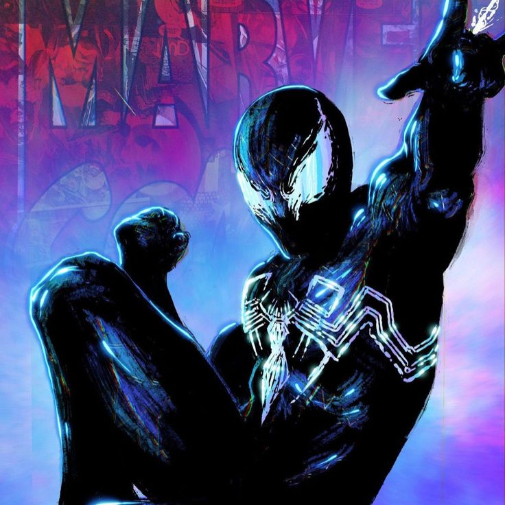

Guilherme Souza
Desenvolvedor Full Stack com foco no desenvolvimento de aplicações modernas, escaláveis e bem estruturadas, sempre buscando boas práticas e código limpo
Desenvolvedor Full Stack com foco no desenvolvimento de aplicações modernas, escaláveis e bem estruturadas, sempre buscando boas práticas e código limpo